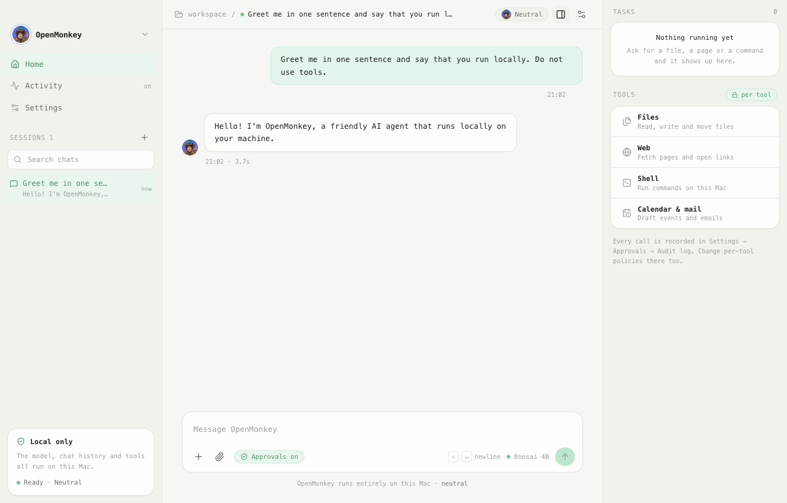
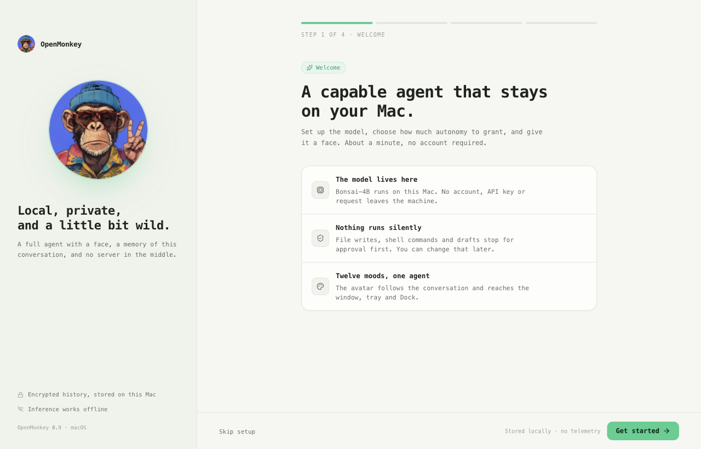
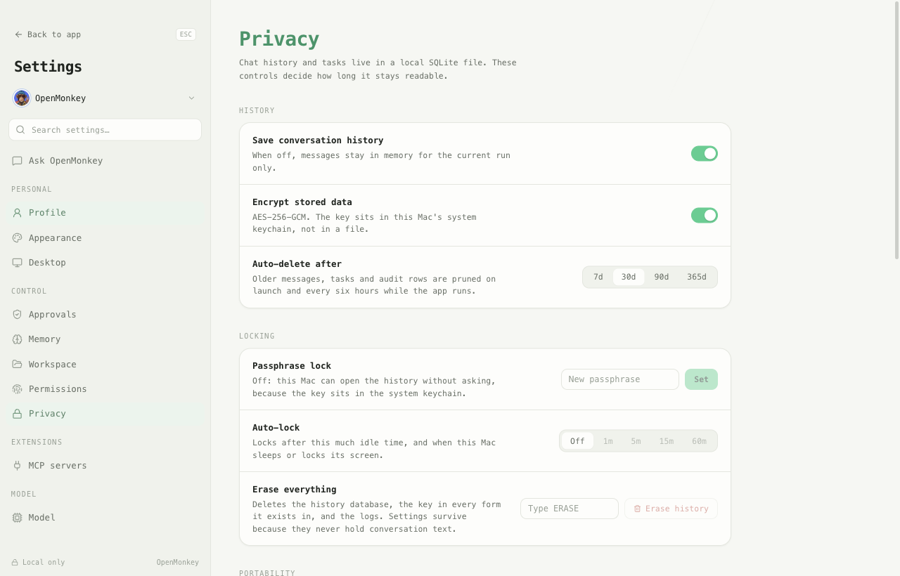
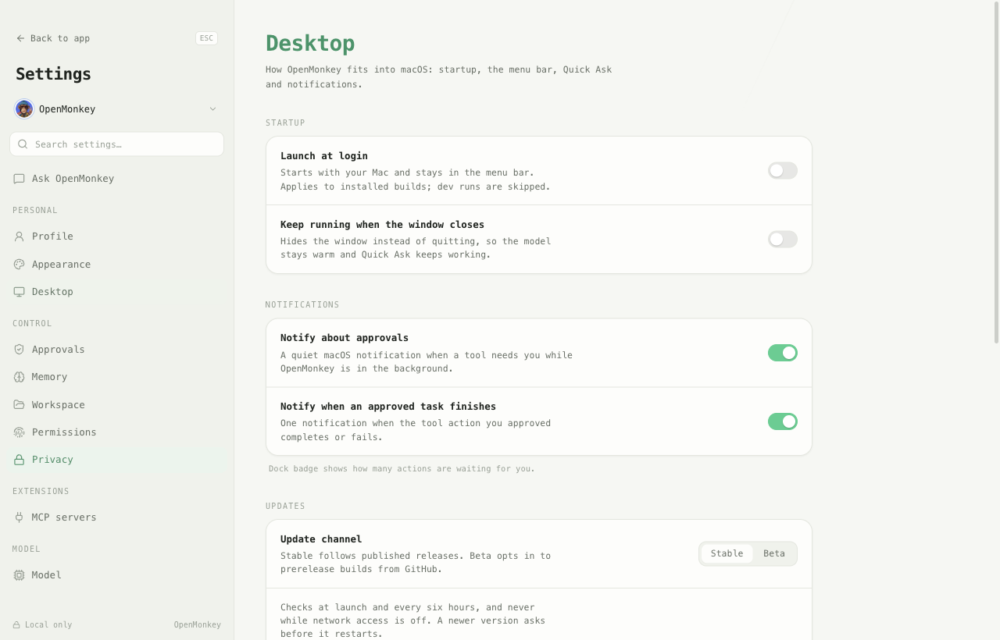

Nothing leaves your Mac
There is no account, no telemetry and no API key. History is sealed with AES-256-GCM under a Keychain key, and the renderer cannot reach the network at all.
$

There is no account, no telemetry and no API key. History is sealed with AES-256-GCM under a Keychain key, and the renderer cannot reach the network at all.
The portrait in the window, the menu bar icon and the Dock badge change with the conversation, so you can read how the work is going from across the desk.
ls ~/Documents/report.pdf
Every tool action waits for a decision and lands in the audit log.
File writes, shell commands, web fetches and calendar changes stop at a dialog showing the tool and its arguments. Approve once, deny, or remember the choice for the session.
Tokens are batched into one render per frame, the settings screen loads as its own chunk, and a performance suite fails the build when the numbers drift.
Summarise the notes I wrote yesterday.
Quick Ask opens with Option+Space, answers from the same model, and can approve a tool inline. A live task monitor shows what the agent is doing right now.



The app is free and open source. It runs the model on your hardware, so you need the weights once and a machine that can hold them.
Ventura 13 or newer, Apple Silicon and Intel. Around 2 GB of memory once the model is loaded.
ReleasesWindows 10 or newer with the GGUF backend. macOS-only tools stay disabled until the model is present.
ReleasesNode 22.12 or newer. One install command, one dev command, the model downloads itself.
DocumentationRelease artifacts are produced by the tag pipeline. Builds you make locally are unsigned, so Gatekeeper asks once.